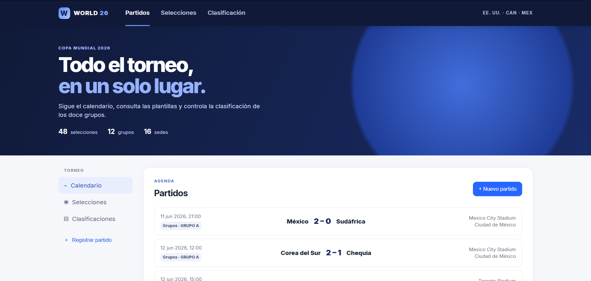

Producto aún en desarrollo
Cuando no hay sesión de fotos o el producto aún es un prototipo, cuesta comunicar su forma, materiales y personalidad de manera atractiva.
Visualización 3D · Blender · Producto digital
Launch3D Studio crea visuales 3D de producto con modelado, materiales e iluminación de estudio. Un servicio inicial centrado en imágenes claras y cuidadas para portfolio, web y redes.
El enfoque
Cuando no hay sesión de fotos o el producto aún es un prototipo, cuesta comunicar su forma, materiales y personalidad de manera atractiva.
Las imágenes improvisadas pueden hacer que una idea sólida se perciba como algo inacabado, especialmente en web, redes o una presentación.
Un render de estudio permite destacar detalles, acabados y proporciones sin depender todavía de una producción fotográfica compleja.
Proceso inicial
Cada proyecto empieza con una referencia clara y termina con renders preparados para comunicar el producto de forma profesional.
Referencias, medidas y el estilo visual que necesita el producto.
Construcción 3D del objeto con foco en las formas visibles.
Materiales y escena de estudio para dar claridad y carácter al render.
Imágenes finales listas para web, redes o una presentación de proyecto.
Portfolio
Una selección de trabajos personales y universitarios que muestran modelado, materiales, iluminación, animación y desarrollo web.

Proyecto personal · En progreso
Concepto de vehículo urbano creado como primer proyecto de Launch3D Studio. Explora modelado 3D, materiales, iluminación de estudio y presentación digital de producto.

Proyecto universitario · 2025–2026
Robot humanoide construido por piezas, con materiales reflectantes, iluminación de escena y dos pruebas de animación: ciclo de andar y gesto de saludo.
Ver documentación PDF ↗

Proyecto universitario · 2025–2026
Recreación en Blender de un set con estructura exterior y micromundo interior. El trabajo combina modelado modular, organización de escena, materiales e iluminación.
Ver documentación PDF ↗



Proyecto universitario · Desarrollo web
Aplicación full-stack con cliente en HTML, CSS y JavaScript, API REST en PHP y base de datos MySQL. Incluye agenda, selecciones, clasificación por grupos y gestión de partidos.
Servicios iniciales
Trabajo con proyectos pequeños y referencias claras. El objetivo es entregar visuales de producto cuidados, no prometer una producción que todavía no puedo asumir.
Una imagen principal de producto con modelado básico, materiales e iluminación de estudio.
Diferentes ángulos y detalles para explicar mejor la forma y los acabados del objeto.
Ajustes de color, metal, plástico o cristal basados en referencias proporcionadas.
Archivos optimizados para portfolio, web, redes sociales o una presentación de marca.
Precio de lanzamiento
Una tarifa de inicio para productos sencillos y referencias claras. El alcance se acuerda antes de empezar para que el resultado y el presupuesto sean realistas.
Evolución del estudio
Una web sencilla que muestra los trabajos realizados y el tipo de visuales que puedo crear.
Practicar modelado, materiales, iluminación y composición con objetos de complejidad asumible.
Aplicar el proceso a productos sencillos, con referencias y un alcance cerrado.
Ampliar a animación o experiencias interactivas solo cuando la práctica y los proyectos lo permitan.
Stack técnico inicial
Esta decisión reduce complejidad y permite centrar el proyecto en UX, narrativa, dirección visual y claridad de producto.
Disponibilidad
Si tienes un objeto, una idea o un producto sencillo que necesite imágenes 3D, podemos definir un encargo concreto a partir de tus referencias.